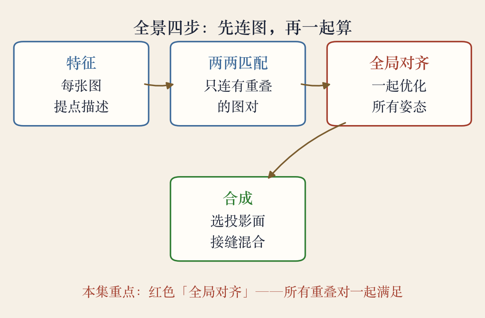
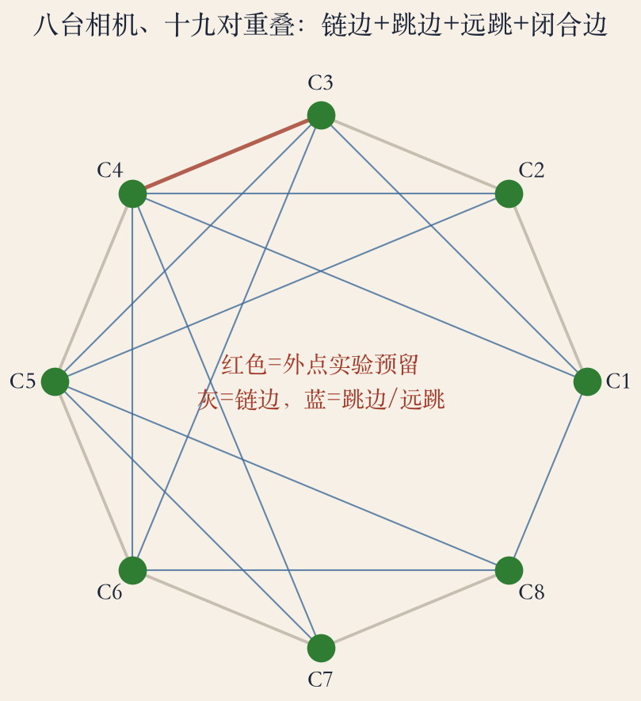
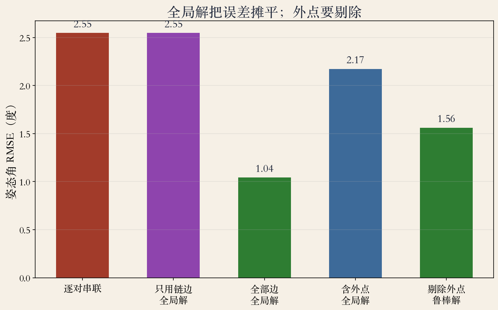

第 8 章 · 全景拼接 Ⅰ
多张图，怎么连成一张
- 先找重叠，再估每张图的姿态，最后一起压误差。
- 一张一张接，错误会越传越偏。
- 一起算，才压得住。
- 下一集再讲柱面投影与接缝。
依据：原书第 514–529 页
拼接为什么老
几十年的老方法，骨架没变
- 对齐、拼成无缝马赛克，是最古老、最常用的视觉算法之一。
- 老不等于简单：手机一键出片，是前面问题都被踩过。
- 骨架：提特征、找匹配、估变换、再融合。
- 后面每集都在骨架上加零件。
依据：原书第 514 页
核心问题
先问对问题，再谈算法
- 哪些图之间有重叠？
- 重叠处怎么对齐？
- 对齐后怎么接得看不出缝？
- 前两件本集讲，第三件留给后面两集。
依据：原书第 515 页
三个问题
重叠：靠匹配
对齐：靠几何
接缝：靠投影与融合
全景四步
先连图，再一起算
- 每张图提特征、写描述。
- 只给有重叠的图对做匹配。
- 所有姿态放到一起做全局对齐。
- 选投影面、找接缝、做混合。
依据：原书第 514–515 页

全景四步：本集重点是全局对齐｜程序生成，未用教材原图
全局优化
整体一致，还要发现重叠
- 整体一致：不让每对图各说各话。
- 发现重叠：让匹配结果自己长出关系图。
- 不是把所有图硬塞进一个平均。
- 找一个让所有重叠对都尽量满意的折中。
依据：原书第 515 页
逐对串联的漂移
局部漂亮，不等于整体正确
- 对齐的图对越多，解越会漂。
- 每对误差沿着链子累积，链越长末端越飘。
- 相邻两张几乎完美，一闭合才发现首尾对不上。
- 别拿相邻误差当全局误差。
依据：原书第 519 页
误差怎么累积
每对只错一点
串起来偏得离谱
闭合边暴露问题
八台相机的关系图
边越多，误差越没有地方躲
- 灰线：相邻链边。
- 蓝线：隔一张、隔两张的跳边。
- 还有一条首尾闭合边。
- 全局对齐：在这张网上让每条边的矛盾尽量小。
依据：原书第 526 页 + 本集实验

八台相机、十九对重叠：链边 + 跳边 + 闭合边｜程序生成，未用教材原图
同时对齐
误差要分给每台相机
- 逐对串联：误差全推给后面。
- 同时求解：每台相机承担一点。
- 最小二乘：残差平方和最小。
- 不保证每条边完美，保证整体矛盾最小。
依据：原书第 527 页
min Σ ‖rij‖²
rij：边 (i,j) 的错配残差
链式 vs 全局
误差从 2.55 度降到 1.04 度
- 八台相机，间隔 45°；十九条边各加 2° 噪声。
- 链式解 RMSE 2.55°，全局解 1.04°。
- 首尾闭合缺口 8.30° → 2.40°。
- 只用链边做全局解，结果仍 2.55°：约束不够。
依据：本集实验

链式、全局、含外点与鲁棒解的误差对比｜程序生成，未用教材原图
捆扎调整
姿态和三维点一起调
- 同时调整相机姿态和三维点位置。
- 点的位置和相机姿态互相牵制。
- 一起调，才能让重投影误差整体最小。
- 姿态图是轻量版，捆扎是完整版。
依据：原书第 527 页
初值从哪来
串联给起点，全局来收尾
- 逐对配准串联，得到初始姿态和焦距。
- 串联会漂，但便宜、稳，能给出大致起点。
- 初值太差，迭代可能跑到歪解。
- 不是取代，是接力。
依据：原书第 528 页
代价
全局最优也要算得起
- 变量更多：相机数 × 姿态 + 三维点数 × 3。
- 每轮都要算所有观测的残差。
- 图多就分块、分层，或先固定一部分。
- 先看规模和时间预算，再选解法。
依据：原书第 529 页
规模策略
小规模：全捆
大规模：分块/分层
先固定一部分
错边与鲁棒
一条离谱的边能拽动全局
- 故意把一条边偏 25°。
- 全局 RMSE 从 1.04° 涨到 2.17°。
- 鲁棒重加权后回到 1.56°。
- 先筛外点，再用鲁棒损失兜底。
依据：本集实验
顺序
匹配后先筛一致性
求解时用鲁棒损失
先筛外点，再求精
工程清单
排查也有顺序
- 连图：只给有重叠的图对建边。
- 冗余：多加跳边和闭合边。
- 鲁棒：筛外点 + 鲁棒损失。
- 初值：串联给起点；规模：图多就分块。
依据：本集实验 + 原书第 526–529 页
先查什么
1 边连对没有
2 有没有错边
3 再怀疑优化器
数学骨架
每台相机一个姿态
- 每条重叠边给一个相对姿态观测。
- 未知量：各台相机的绝对姿态。
- 固定一台，消除整体旋转自由度。
- 姿态图只解姿态；捆扎再加上三维点。
依据：原书第 527–529 页
收束 · 下一集
先对齐，再投影
- 逐对串联会漂，全局最小二乘把误差压平。
- 捆扎调整连三维点一起解。
- 实验：2.55°→1.04°，闭合缺口 8.30°→2.40°。
- 下一集：柱面、球面还是平面？投影选错会变形。
依据：原书第 514–529 页
两件事
对齐：谁对谁
投影：往哪放
都做对，全景才站得住